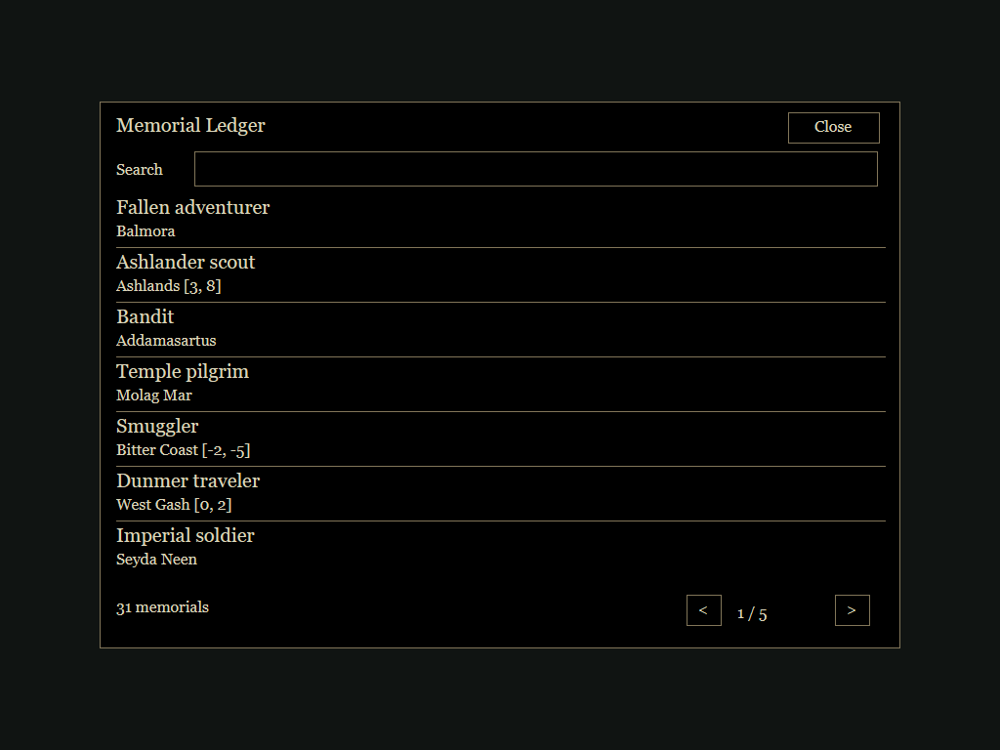
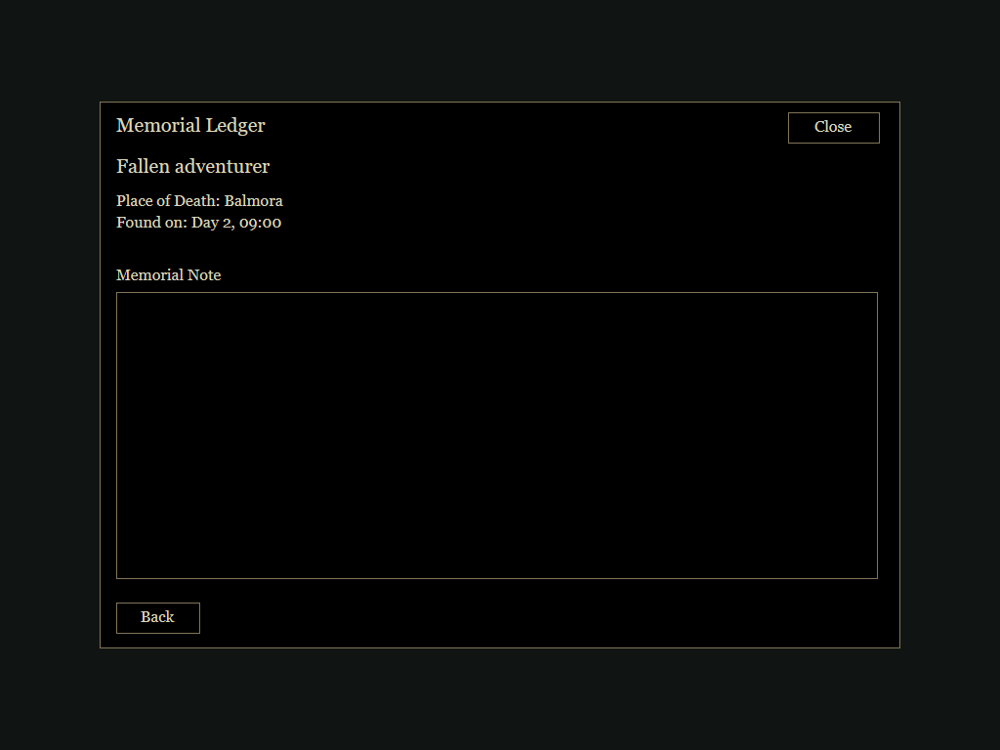
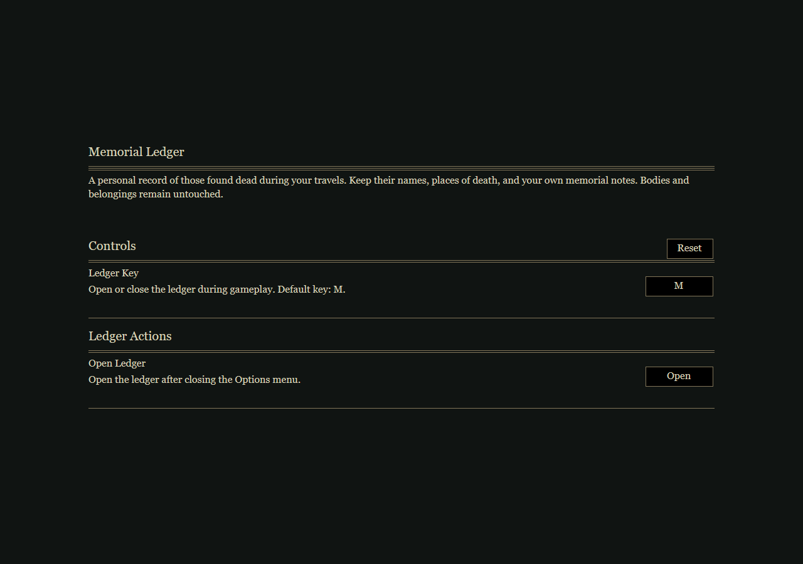

In-Game Behavior
Dead NPCs in active cells are recorded passively, without touching or looting them. The mod never removes bodies, reads inventories, adds corpse interaction prompts, or changes vanilla corpse behavior. All interaction happens in the ledger panel.


Press M by default, or change the binding under Settings > Scripts > Memorial Ledger. Existing custom bindings are preserved. Search by NPC name using case-insensitive partial matching; page through entries; select a row to read Place of Death and Found on, or write a Memorial Note. Notes save on Back or Close, without a Save Note button.
Names, locations, first-observed times, and notes persist per save. The mod does not assume you killed an NPC or that first observation was the time of death. Creatures and players are excluded.
Memorial Entries
The panel presents names, locations, discovery dates, and personal notes. Technical status labels, reference IDs, and the state-filter dropdown have been removed. Entries remain when bodies disappear or their cells unload.
No Keep body control, cleanup timer, or safety-bypass option exists. Vanilla OpenMW and other mods retain responsibility for corpse disposal.
Install
Use the import-ready ZIP attached to a GitHub release when available, or run the packaging tool from a source checkout. Full documentation
Targets OpenMW builds with MWUI, Settings, UI, and input-binding APIs, developed against current 0.52 development documentation. NPC persistence flags are no longer required. Classic Morrowind/MWSE is unsupported.
Add your extracted directory as a data path and enable the script content. Example installation:
data="D:/Games/OpenMW/Mods/MemorialLedger"
content=MemorialLedger.omwscriptsUpdating from 0.1.0 preserves entries and notes but stops pending cleanup and removes body controls. Bodies already removed by the old version cannot be restored by updating. No installed profiles or saves have been modified by this build.
Settings
Controls contains Ledger Key, its description, and a right-aligned binding button. Reset restores M; Escape cancels recording and Delete/Backspace clears the binding. Ledger Actions contains the separate Open command, which opens the ledger after Options closes. Descriptions are retained and the binding label is not duplicated.

Verification
Sixteen tests execute real Lua 5.1 with API doubles that forbid inventory access and deletion. Checks include default M binding, preserving user bindings, note persistence, name search, reference tracking, save migration, both panel layouts, compact resizing, Menu-context settings registration, rebinding, cancellation, clearing, resetting, and Open action dispatch.
Native rendering, input binding, and reference serialization still need the in-game acceptance checklist. Test on a disposable save first.